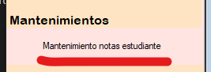
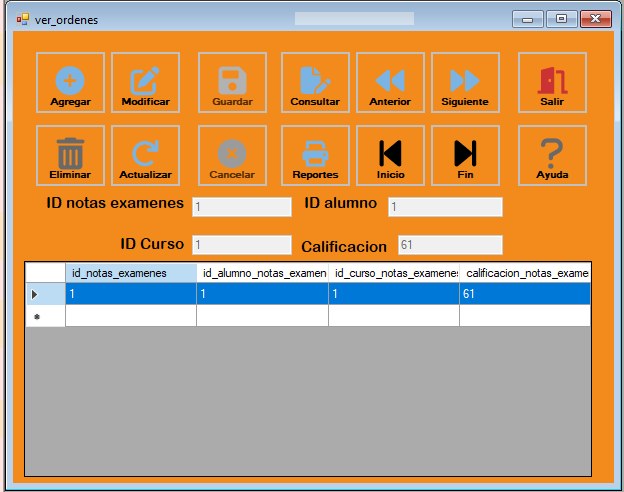

El Mantenimiento ordenes tiene como objetivo administrar la nota de estudiante realizada. Para ello debemos dirigirnos al menú de mantenimientos y luego seleccionamos la opción "Mantenimiento notas estudiante".
En la siguiente Figura podremos observar el Formulario que debemos llenar. Tambien hay que tener en cuenta que si se quiere modificar el "ID Alumno" e "ID Curso" tienen que existir. Deben colocarse datos numericos enteros en todos los textbox para que no hayan inconvenientes en la base de datos.
